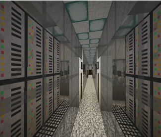

SecureNET:
The Grey Hat Origins
|
Game Download
[click
here]
Requirements/Game
Settings
1. Play on Minecraft
Version 1.12.2
2. Play on Norma
Difficulty
3. Play in Adventure Mode
4. Particles & Sound
ON
5. Auto-Jump OFF
6. Check Texture Pack
7. To advance text click
>>>
8. Have fun!
Software Used
- Minecraft: https://minecraft.net/en-us/
- PiskelApp: https://www.piskelapp.com/p/agxzfnBpc2tlbC1hcHByEwsSBlBpc2tlbBiAgICPzaqgCAw/edit
- NovaSkin: https://minecraft.novaskin.me/resourcepacks
- BlockBench: http://blockbench.net/
- Image to Map: https://www.minecraftforum.net/forums/mapping-and-modding-java-edition/minecraft-tools/1261738-linux-windows-imagetomap-in-game-text-and-images
|  |
|
 |